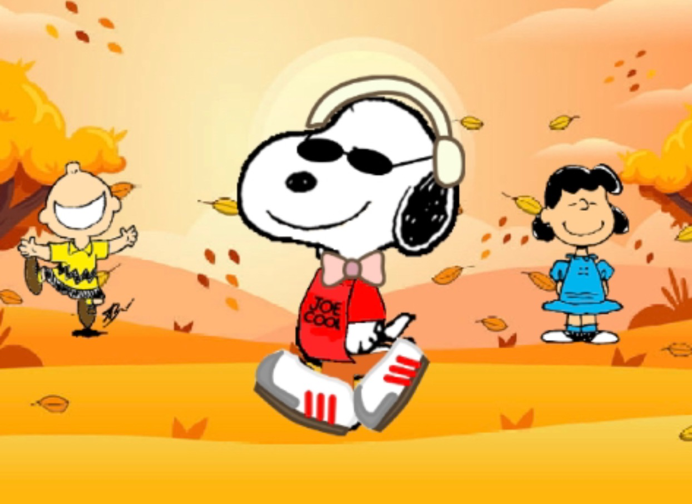
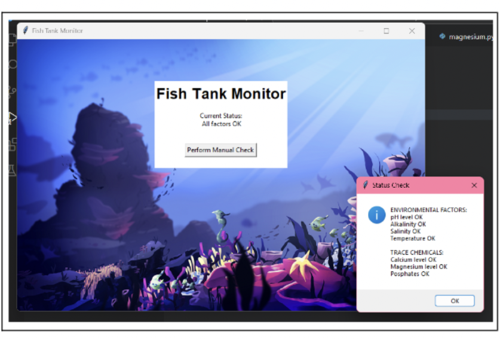
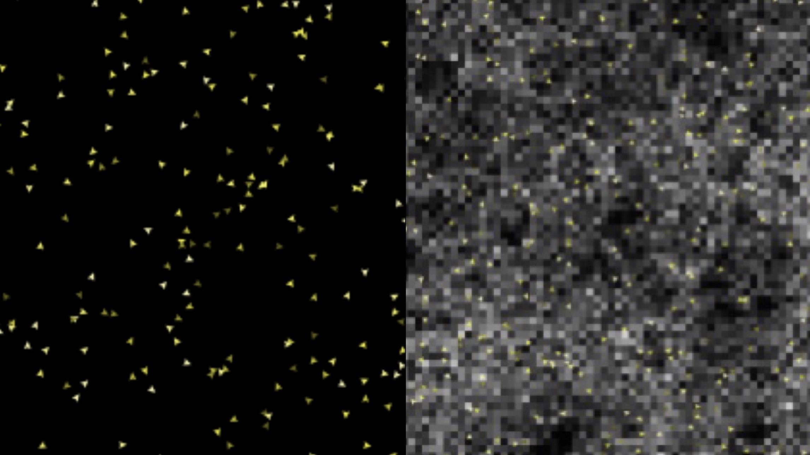

Home
Portfolio
About Me
This is my Portfolio Page!

Second day scratch project.
Project 1.2.5.

This is my game called "Reaction time." The game first asks you to input your name, after you enter that it asks you how many attempts you want. After that you press the start game and you start clicking the fish as they pop up on the screan. The score is calculatted by the distance from fish to fish on the screen. After you are done you can check the leader board to see where you are ranked. The game will automatically sort the players numerically based on score after 5 people have played./h1>
Scratch Snoopy Game.

This is our Snoopy Dressup game. The user selects different articles of clothing and accessories to put on Snoopy. You select different categories based on the corresponding buttons at the top. For certain items you can click and change the color. Once complete, snoopy then has a dance party to celebrate.
2.1.6 pHishy Fish Tank Project.

This project revolved around debugging thee fish tank. There was an error with logging in for alice2great_company.com. The indexes are out of range. To fix these issues, we had to redo the indexes to ensure that we do not get an IndexError.
4.1.4 Honeybee Simulation Project.

The simulation is modeling the intelligence of a swarm of honeybees during their hive finding process. It shows how the honeybees can accurately pick the best hive within a dozen other hives, that is best fit for the amount in their swarm. Scout bees will be sent our by swarms to explore different hives. These scout bees will explore the hives and report back to the swarm. They leave a dance path to show where the hive they found is so other bees can travel to that hive.
Using netlogo do remix of illusions.